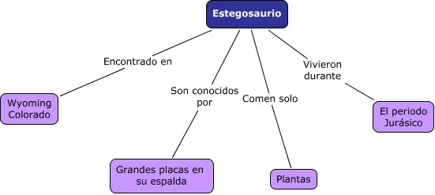

Inicio
Introducción
Los Mapas Conceptuales ilustran gráficamente las relaciones entre ideas. Dos o más conceptos se enlazan por medio de palabras que describen sus relaciones. Observa el siguiente ejemplo:

Mapa Conceptual que muestra los conceptos asociados con un dinosaurio en particular.
Los Mapas Conceptuales organizan, incrementan y alientan la comprensión. Ellos ayudan a los estudiantes en el aprendizaje de nueva información mediante la integración de cada nueva idea a su cuerpo de conocimiento ya existente. Los Mapas Conceptuales son ideales para medir el desarrollo del aprendizaje en un estudiante. A medida que los estudiantes crean mapas conceptuales, ellos reproducen ideas utilizado sus propias palabras. Los enlaces mal dirigidos o conexiones equivocadas alertan a los docentes sobre las áreas que el estudiante no ha comprendido aún.
Fecha de publicación en EDUTEKA: Mayo 11 de 2002. Fecha de la última actualización: Mayo 11 de 2002.